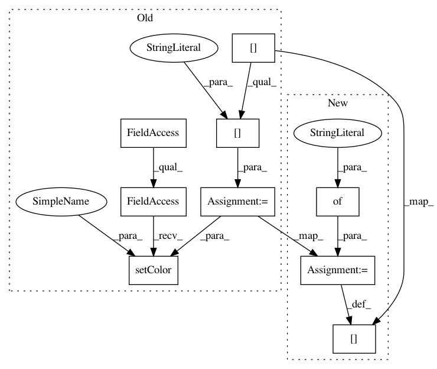

d480ed0a865d8041dfa231f15156202edd3ef694,flow/envs/bottleneck_env.py,BottleneckEnv,apply_toll_bridge_control,#BottleneckEnv#,254
Before Change
lane = self.vehicles.get_lane(veh_id)
lane_change_mode = \
self.cars_waiting_for_toll[veh_id]["lane_change_mode"]
color = self.cars_waiting_for_toll[veh_id]["color"]
self.traci_connection.vehicle.setColor(veh_id, color)
self.traci_connection.vehicle.setLaneChangeMode(
veh_id, lane_change_mode)
if lane not in self.fast_track_lanes:
self.toll_wait_time[lane] = max(
After Change
// Disable lane changes inside Toll Area
lane_change_mode = \
self.vehicles.get_lane_change_mode(veh_id)
self.cars_waiting_for_toll[veh_id] = \
{"lane_change_mode": lane_change_mode}
self.traci_connection.vehicle.setLaneChangeMode(
veh_id, 512)
else:
if pos > 50:
In pattern: SUPERPATTERN
Frequency: 4
Non-data size: 9
Instances
Project Name: flow-project/flow
Commit Name: d480ed0a865d8041dfa231f15156202edd3ef694
Time: 2018-12-15
Author: akreidieh@gmail.com
File Name: flow/envs/bottleneck_env.py
Class Name: BottleneckEnv
Method Name: apply_toll_bridge_control
Project Name: flow-project/flow
Commit Name: d480ed0a865d8041dfa231f15156202edd3ef694
Time: 2018-12-15
Author: akreidieh@gmail.com
File Name: flow/envs/bottleneck_env.py
Class Name: BottleneckEnv
Method Name: ramp_meter_lane_change_control
Project Name: flow-project/flow
Commit Name: d480ed0a865d8041dfa231f15156202edd3ef694
Time: 2018-12-15
Author: akreidieh@gmail.com
File Name: flow/envs/bay_bridge/base.py
Class Name: BayBridgeEnv
Method Name: apply_toll_bridge_control
Project Name: flow-project/flow
Commit Name: d480ed0a865d8041dfa231f15156202edd3ef694
Time: 2018-12-15
Author: akreidieh@gmail.com
File Name: flow/envs/bay_bridge/base.py
Class Name: BayBridgeEnv
Method Name: ramp_meter_lane_change_control